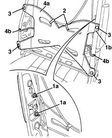

7045A51 SQUAB LUMBAR REINFORCEMENT ON FRONT SEAT, . (ONE) LEFT or RIGHT - R.R .
- Path
- Procedures > 70 FITTINGS > 7045 FRONT SEATS > 7045A front seat assembly > 7045A51 SQUAB LUMBAR REINFORCEMENT ON FRONT SEAT, . (ONE) LEFT or RIGHT - R.R .
- Kind
- repair procedure (removal / refitting; the operation number is the code)
- Applies to
- all engines; all production periods
- Interactive page
- https://sloeber94.github.io/elrnDB-lYpsln/en/#/2429615
Applies to: all engines; all production periods
 Removing
Removing
 Refitting
Refitting7045A44 seat interior guard - r r
7045A56 LEVER controlling DRIVER'S seat height adjustment device - R.R .
7045A43 seat exterior guard - r r
7045B10 l/h or r/h front seat head restraint - r+r
7045A48 LEVER and TRIM for folding backrest - R.R.
7045D30 Front seat BACKREST COVER, left or right - R.R. (without separating the cover from the upholstery)
1. Loosen the nuts (1a) for the Air Bag module (to rlease the edge 1b of the lumbar reinforcement).
2. Cut the cable fastening bands.
3. Remove the rivets using a drill.
4. Remove the lumbar reinforcement (4a) releasing the ends (4b) of the reinforcement rods.

Applies to: all engines; all production periods
Refitting
RemovingCheck that the reinforcement is not damaged.
Position the reinforcement and attach the ends of the reinforcement rods.
Fit the rivets.
Position the bands.
Tighten the Air Bag module nuts.
 | Fastening | Component | Ø | Value (daNm) |
|---|---|---|---|---|
- | Nut | FRONT SIDE AIR BAG MODULE ASSEMBLY. | M6 | 0.8 |
7045D30 Front seat BACKREST COVER, left or right - R.R.
7045A48 LEVER and TRIM for folding backrest - R.R.
7045B10 l/h or r/h front seat head restraint - r+r
7045A43 seat exterior guard - r r
7045A56 LEVER controlling DRIVER'S seat height adjustment device - R.R .
Topics linked from this page (7)
- 7045A24 squab knob - r r
- 7045A43 seat exterior guard - r r
- 7045A44 seat interior guard - r r
- 7045A48 LEVER and TRIM for folding backrest - R.R.
- 7045A56 LEVER controlling DRIVER'S seat height adjustment device - R.R .
- 7045B10 l/h or r/h front seat head restraint - r+r
- 7045D30 Front seat BACKREST COVER, left or right - R.R.